Overview
We built a tool that estimates a fair resale price for any used car so the company can buy and sell with confidence.
- Cars4U, a used-car platform, needs a data-driven way to price inventory instead of relying on manual guesswork and gut feel.
- Goal: predict resale Price from car attributes (year, mileage, engine, brand, location) to spot good deals and price listings fairly.
- Mispricing is costly: overpricing stalls sales while underpricing leaves margin on the table on every transaction.
- Framed as a supervised regression problem on a heavily right-skewed target, modeled on log price to stabilize the distribution.
- Success measured by R-squared and RMSE on a held-out test set across competing model families.
Methodology
flowchart LR A[Raw Data] --> B[Clean & Encode] B --> C[EDA] C --> D[Train/Test Split] D --> E["Random Forest / Linear Regression / Ridge / Lasso"] E --> F["Tune (Cross-Validation)"] F --> G["Evaluate: R2 / RMSE"]
The Data
We started with about 7,250 used-car records and cleaned them into a reliable set of roughly 6,000 cars ready for modeling.
- Raw dataset: 7,253 cars across 14 columns including Year, Kilometers_Driven, Fuel_Type, Transmission, Mileage, Engine, Power, Seats and New_price.
- Fixed clear data-entry errors, e.g. a 2017 car logged at 6,500,000 km, and treated impossible 0-value Mileage as missing.
- Imputed missing Mileage, Engine, Power and Seats using brand- and model-level medians extracted from the Name field.
- Engineered a Brand feature from 2,041 unique car names so the model could learn brand value without overfitting to names.
- Final modeling set split 70/30 into 4,212 train and 1,806 test rows with 200 one-hot encoded features.
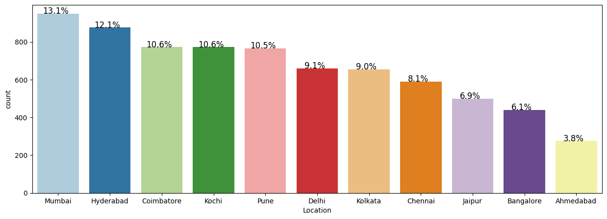
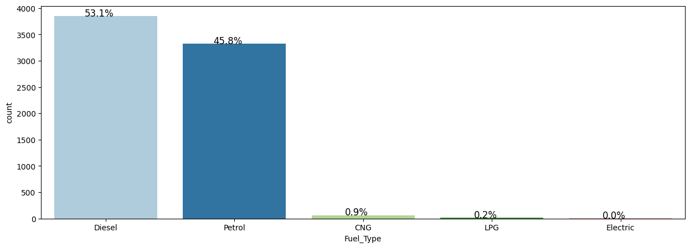
Exploratory Analysis
Prices and mileage were extremely lopsided, so we used a log transform to make the patterns clearer and easier to model.
- Both Price and Kilometers_Driven were strongly right-skewed, so log transforms (price_log, kilometers_driven_log) were applied.
- Box plots and histograms exposed long upper tails and luxury-car outliers driving the raw price spread.
- Categorical breakdowns showed listings concentrated in a few cities and dominated by petrol/diesel manual cars.
- Newer manufacturing years and lower kilometers consistently aligned with higher resale prices.
- Log-scaled relationships were far more linear, justifying log price as the modeling target.
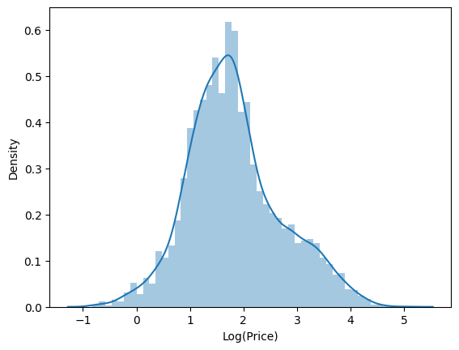
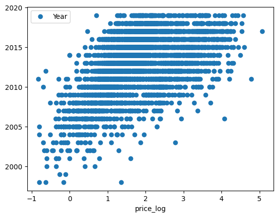
Key Drivers of Price
A car's age, how far it's been driven, its power and engine size, brand, and fuel type were the biggest factors in its price.
- Correlation heatmap confirmed Power, Engine and Year are the strongest numeric predictors of log price.
- Newer Year and higher Power/Engine push price up; higher Kilometers_Driven pulls it down.
- Random Forest feature importance flagged Fuel_Type, Mileage, Year and Power/Engine as the dominant signals.
- Brand carries real premium: luxury marques command markedly higher resale value than mass-market brands.
- Location and transmission add secondary, city-level pricing effects on top of the core drivers.
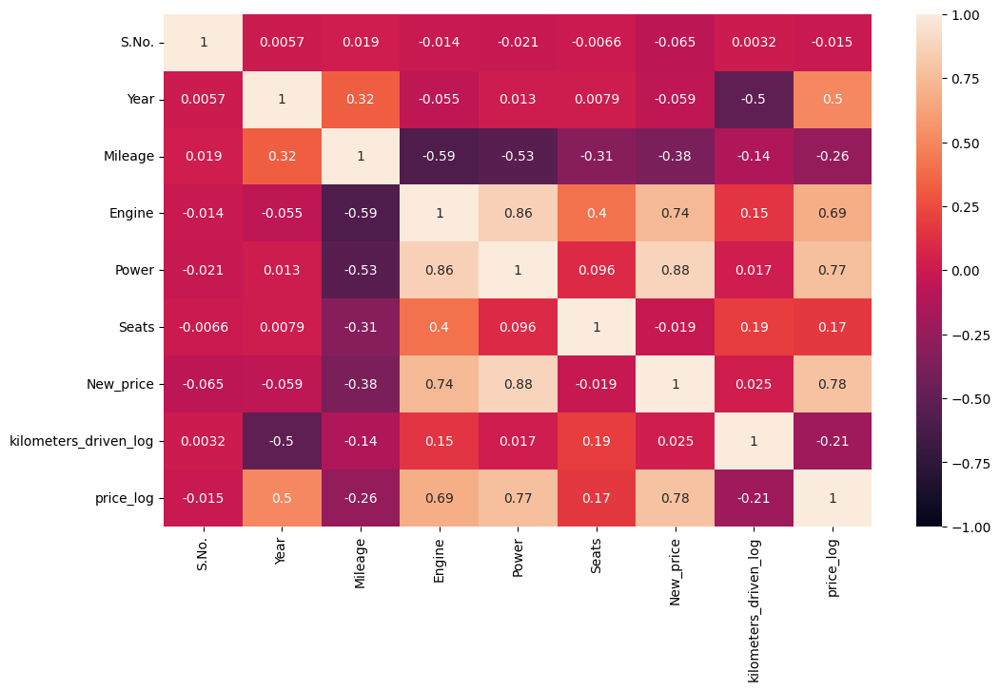
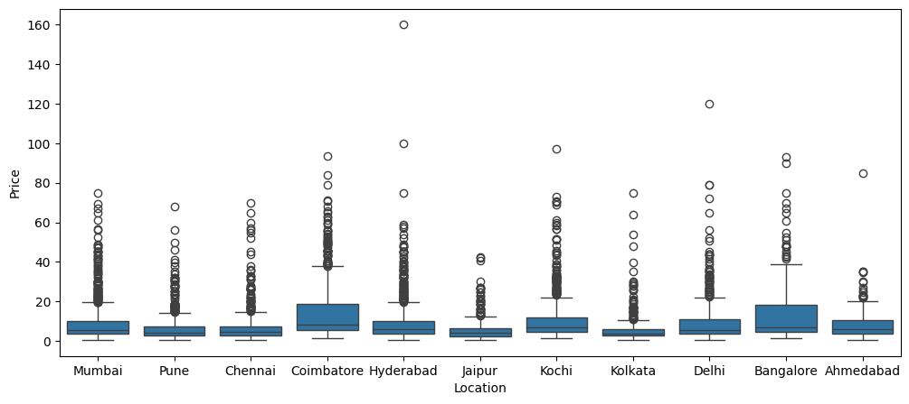
Modeling & Results
We tested several prediction methods; the simplest regression on log price was the most accurate and reliable.
- Compared Linear, Ridge and Lasso regression, a Decision Tree and a Random Forest, with tuning for the tree models.
- On log price, Linear/Ridge Regression won: test R-squared 0.948 and RMSE 0.200, explaining ~95% of price variation.
- Random Forest was a close second at test R-squared 0.940 (RMSE 0.214) and strong without heavy tuning.
- Decision Tree hit perfect training R-squared 1.0 but dropped to 0.884 on test, a clear overfitting signal.
- GridSearch/RandomizedSearch tuning controlled tree depth and split size to narrow the train-test gap.
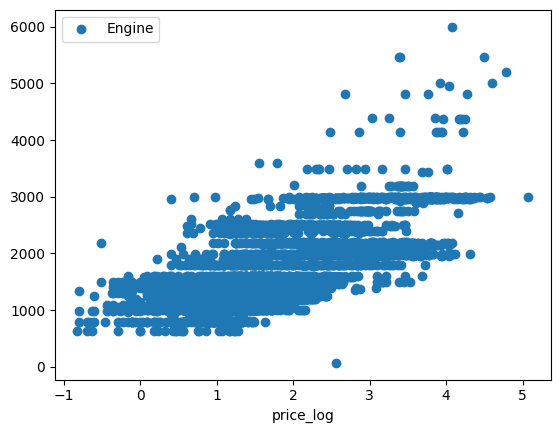
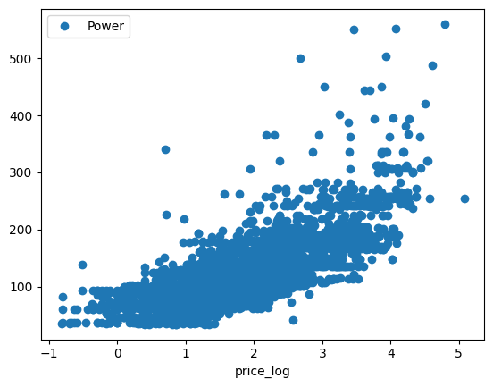
Business Recommendations
Adopt the regression pricing model to set listings instantly and flag mispriced cars, with the tree model as a backup.
- Deploy Ridge/Linear Regression on log price (test R-squared 0.948) as the production pricing engine for fast, accurate quotes.
- Use predicted vs. listed price gaps to auto-flag underpriced buys to acquire and overpriced inventory to re-price.
- Prioritize capturing Year, Power, Engine, Mileage, Brand and Fuel_Type cleanly, the features that move price most.
- Keep Random Forest as a robust fallback and retrain periodically on fresh listings to track market drift.
- Built with: pandas, numpy, scikit-learn, statsmodels, matplotlib, seaborn.
More Visualizations
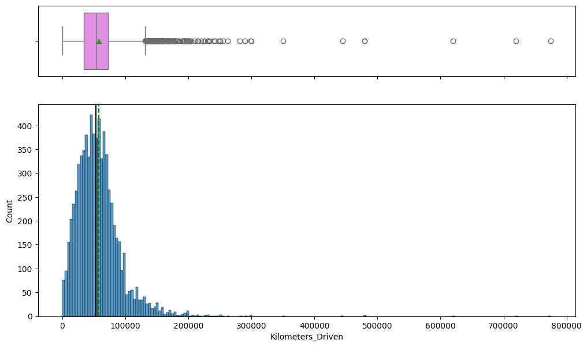
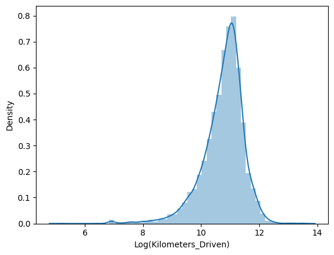
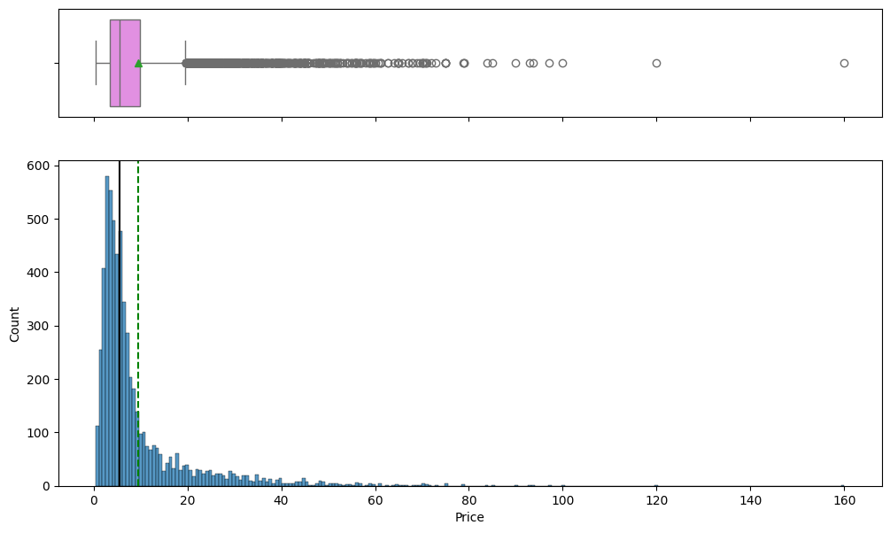
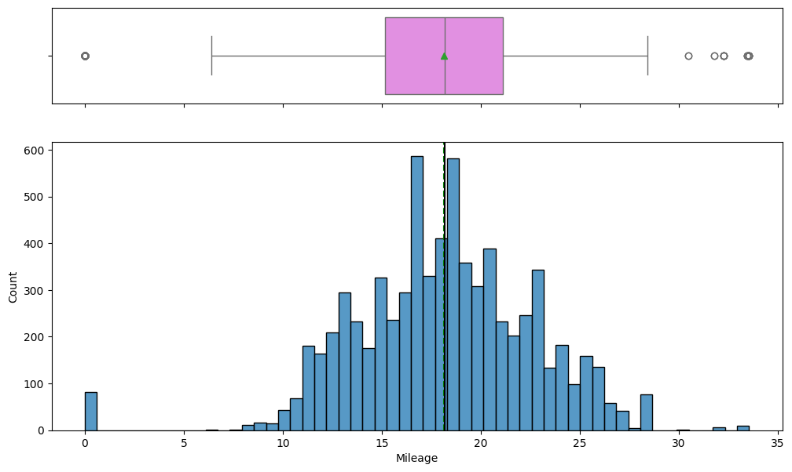
Tech Stack
- pandas — data wrangling and tabular manipulation
- numpy — fast numerical arrays
- scikit-learn — modeling, pipelines, and evaluation
- seaborn — statistical visualization
- matplotlib — plotting
- statsmodels — OLS / statistical inference & VIF
Attribution
This project was completed as part of the MIT Applied Data Science Program (MIT IDSS / Great Learning). The program provided the case-study scaffolding; the analysis, code, and results are my own. Published with permission, for portfolio use only.